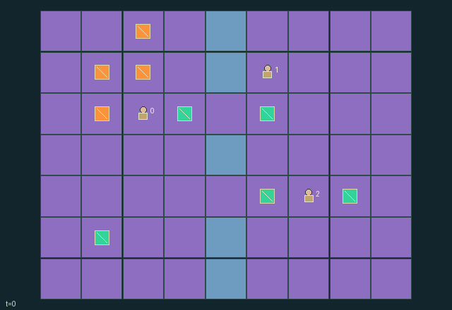

GI084 · Thermal Loom

Cooperatively ship three of four original pieces. Each shipment gives every role +1; each thermal spoil gives every role -1. Intermediate progress has no shaping reward.
Identity and original contract
3 independently actionable roles; 10 discrete commands per role; 122 native observation columns per role; original horizon 128 steps. Declared per-step reward range: -4 to 4. Observation regime: fully_observable.
Source SHA-256: 88d7919965eb62cd7750ba29240d0d417baf3405188b59d79089ff5bf1b60688
The objective, rewards, population, map and horizon remain original. A preview is not a success claim.
Objective and gameplay
Cooperatively ship three of four original pieces. Each shipment gives every role +1; each thermal spoil gives every role -1. Intermediate progress has no shaping reward.
Role-exclusive loading, real carried pieces, single output buffers, two crossing lanes, common finite charge, two-channel machine power and hot-item deadlines couple partner scheduling and routing.
- Four pieces pass through press, furnace and quench to shipping. Three shipments complete the task.
- Only the corresponding specialist loads each machine; everyone can carry, drop, hand off, ship and crank.
- Processing needs three, four and two powered ticks. Outputs must be removed before a machine reloads.
- At most two machines receive power each tick using rotating priority, spending one common charge per powered machine.
- Generator cranking adds four charge, capped at twenty-four; recycling scrap adds three.
- Hot furnace output has eighteen ticks to finish quenching. Stored, carried and processing hot items all face expiry.
- Two narrow crossings and exclusive worker cells create congestion; following into a just-vacated cell fails.
- Three shipments or insufficient remaining viable material ends naturally; otherwise step 128 truncates.
Ending: Three shipments or delivered plus still-viable pieces below three ends naturally. Otherwise horizon 128. Natural completion has priority; raw terminal calls absorb with zero reward.
What this game explores
Resource commons & externalities: An action changes a persistent resource or burden that another role also encounters. Compare extraction with maintenance and record the downstream resource trajectory.
Complementary production & service: A useful outcome requires ordered stages, scarce equipment or another role's capability. Measure real completed products and resource circulation rather than counting intermediate actions as success.
Joint transport & shared access: Positions, load geometry, occupancy and persistent access constrain whose action can succeed next. Distinguish physical handoff, shared controls and simultaneous force from a cosmetic cooperation label.
These are questions supported by rule structure, not observed learning effects.
Play it: operating walkthrough
crucibles play --game gi084Keep Python running and open its printed address. Select this game, set a seed and press Create session. The game itself is always English.
Assign a role range to Host with Assign / take over, or Assign all roles. Invite a second participant with Create player invitation, then assign a disjoint subset. Every original role is available.
For every owned role choose a legal command and press Queue. Arrow keys / WASD queue a declared directional action for the current role camera when available. Space or Advance one joint step advances everyone together. Non-directional games use the selectors.
Unqueued roles use the labelled untrained uniform-legal policy. Take over or release roles before the next step without resetting. Full-state debug is privileged and permanently logged; role cameras preserve permissions. Close the session to retain logs. Server restart does not restore sessions.
Complete command reference
IDs and English labels exactly match the manifest. Availability depends on role, resources, location and phase. An available action can still have no productive effect.
0·Wait
1·Move north
2·Move east
3·Move south
4·Move west
5·Pick lowest-index adjacent ground item if empty; otherwise drop onto an unoccupied item buffer cell
6·Load eligible held item into nearby role-specific machine
7·Ship finished item at dock or recycle scrap at generator
8·Crank four shared charge at generator
9·Mutual adjacent item handoff to empty partner
Roles and capability identifiers
These original role names describe capabilities, not interchangeable skins. Check each owned role's legal selector before planning handoffs.
agent_0·Cutter loads raw material into press
agent_1·Annealer loads cut material into furnace
agent_2·Finisher loads hot material into quench
Information and observation permissions
All rule-relevant gameplay state is public including retired-item records. Active item and station attributes are native flat features. Diagnostic per-step operation flags are not separate role observations or public scene events.
The GIF is full-state debug and may reveal hidden entities or private state. Train on obs[agent], not the picture, state tree or another role's private row. Field slices and visibility are in the original manifest.
Reinforcement-learning integration
import jax
from crucibles_jaxmarl import make
env = make("gi084")
key = jax.random.PRNGKey(0)
key, rk, ak, sk = jax.random.split(key, 4)
obs, state = jax.jit(env.reset)(rk)
actions = env.sample_actions(ak, state)
obs, state, rewards, dones, info = jax.jit(env.step_env)(sk, state, actions)
done = dones["__all__"]Observations are float32 vectors of width 122; actions are scalar int32; masks have 10 entries. Supply all 3 roles each transition. Masked sampling is an engineering reference, not a trained learner.
step_env retains terminal data without reset. step performs outer autoreset and keeps terminal data in info["raw_state"] and info["raw_observation"]. Use dones["__all__"] for episode boundaries; separate completion, failure and time limit in analysis.
JIT or vmap equal identities and shapes. Split independent reset, policy and transition keys. Group different shapes explicitly; do not shrink the population or horizon. Host rendering stays outside training.
Training questions and fair evaluation
Define valid completion from the objective before fitting. Preserve original rewards and also report real deliveries/services, losses, resource state, unresolved episodes and per-role returns. Animation is not a reward signal.
An action changes a persistent resource or burden that another role also encounters. Compare extraction with maintenance and record the downstream resource trajectory.
A useful outcome requires ordered stages, scarce equipment or another role's capability. Measure real completed products and resource circulation rather than counting intermediate actions as success.
Positions, load geometry, occupancy and persistent access constrain whose action can succeed next. Distinguish physical handoff, shared controls and simultaneous force from a cosmetic cooperation label.
Compare memory, communication or centralized critics under matched actor information. Declare critic access; keep actor inputs role-filtered. Match partner/opponent distributions, masks, compute and checkpoint selection. Final tests never enter fitting or selection.
Independent training runs or source-pairing blocks are inferential units; episodes from one policy are not independent training replications. Save hashes, keys, versions, device, time and cost. Negative, zero, failed and indeterminate outcomes are valid. No trained checkpoint or target score is supplied.
Classification and evidence
Overlapping editorial labels are reading aids, not proof of novelty, difficulty, strategic equivalence or learning effects.
- Resource commons & externalities
- Evidence
manifest.task.objective: Cooperatively ship three of four original pieces. Each shipment gives every role +1; each thermal spoil gives every role -1. Intermediate progress has no shaping reward.
- Complementary production & service
- Evidence
manifest.actions.7: Ship finished item at dock or recycle scrap at generator
- Evidence
scene.rules.0: Four pieces pass through press, furnace and quench to shipping. Three shipments complete the task.
- Evidence
scene.rules.5: Hot furnace output has eighteen ticks to finish quenching. Stored, carried and processing hot items all face expiry.
- Joint transport & shared access
- Evidence
scene.rules.1: Only the corresponding specialist loads each machine; everyone can carry, drop, hand off, ship and crank.
- Evidence
scene.rules.5: Hot furnace output has eighteen ticks to finish quenching. Stored, carried and processing hot items all face expiry.
Source, receipts and preview limits
The world-only English GIF replays saved untrained legal actions through the original kernel. At most 25 actual endpoints include initial and terminal state; no invented interpolation. It is full-state debug, not the role observation.
Original source, observation slices, manifest and mechanism
Native receipt · Presentation receipt
Engineering passes do not establish learning. Nonzero floating differences remain recorded and undetermined; no new tolerance was introduced. Human scores remain unverified.